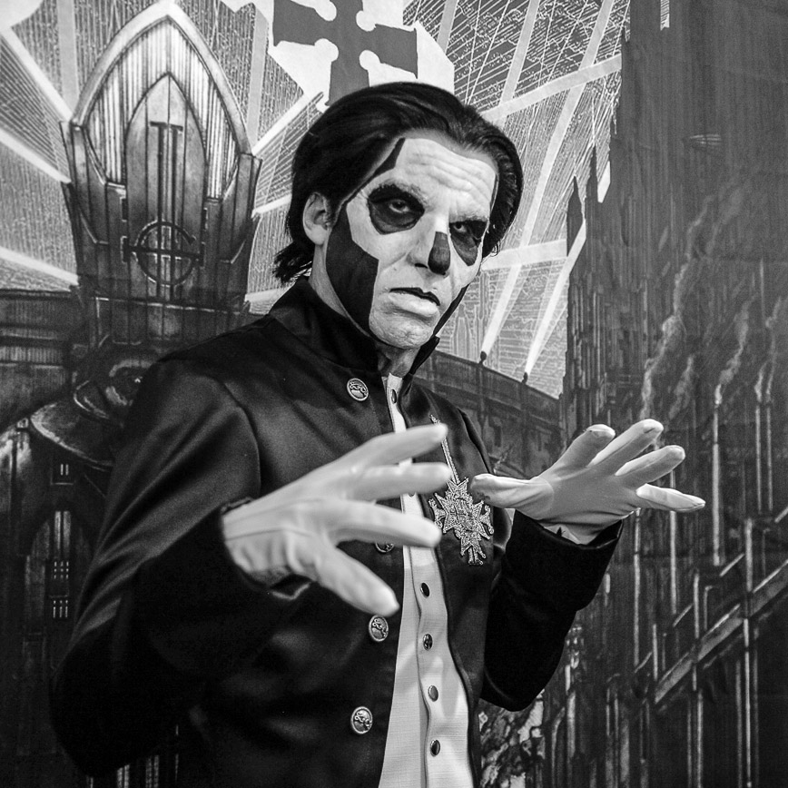
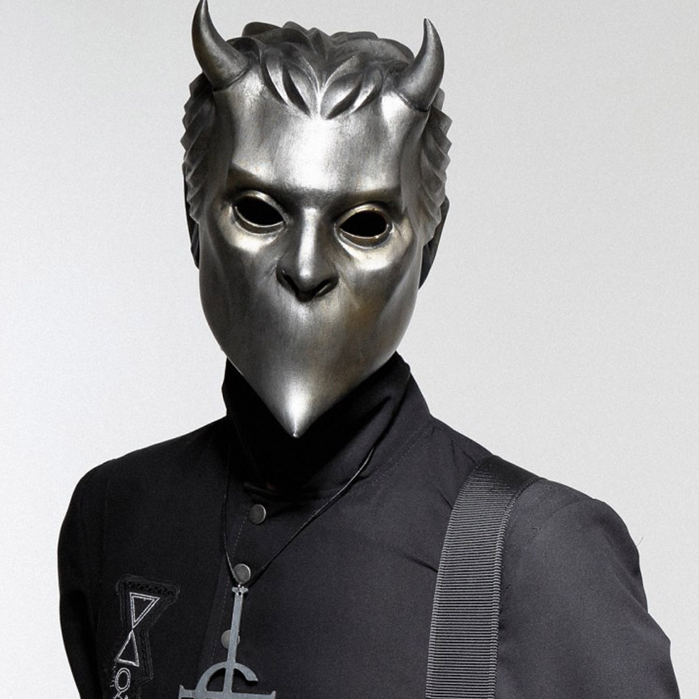

Introducing Ghost, an awesome swedish band
Since there have been various bands called Ghost in the past, many fans assumed a lawsuit had taken place
Ghost is a Swedish heavy metal band that was formed in Linköping in 2008. In 2010, they released a 3-track demo followed by a 7" vinyl titled "Elizabeth", and later their debut full-length album Opus Eponymous. The Grammis-nominated album was widely praised and increased their popularity significantly. Their second album and major label debut Infestissumam was released in 2013, debuted at number one in Sweden, and won the Grammis Award for Best Hard Rock/Metal Album. The band released their third studio album, Meliora, in 2015, to much critical acclaim and high record sales, reaching number one in their home country of Sweden and number eight in the United States. Its lead single, "Cirice", earned them the 2016 Grammy Award for Best Metal Performance.
Ghost is easily recognizable because of its eccentric on-stage presence. Five of the group's six members wear virtually identical, face-concealing costumes. The most distinguishable member is the vocalist, who wears a prosthetic face with skull face paint, appearing as what can be described as a "demonic anti-Pope". Each album cycle has brought about a change in the band's appearance. The vocalist is always portrayed as the same archetype character, but has slight appearance changes and even personality traits are altered from former versions. The band members' true identities are kept anonymous, as their actual names have not been publicly disclosed. The vocalist calls himself Papa Emeritus, and the musicians are referred to only as Nameless Ghouls.
Formation and Opus Eponymous
A Nameless Ghoul said that Ghost formed in 2006, when the members were in another band together and he played a riff that would become "Stand By Him" to them. He said, "I said that this is probably the most heavy metal riff that has ever existed ... When the chorus came to me, it haunted my dreams. Every time I picked up the guitar, I ended up playing that progression, and when I fit the words in, it seemed to cry out for a Satanically-oriented lyric.
After choosing the name Ghost, the band decided to use their love of horror films and "the traditions of Scandinavian metal" in the band's imagery. A Nameless Ghoul said, "Everything started with a bunch of songs. We knew very early that to make this material work we needed to fulfill our dream of putting a horror show together with music." In 2010, the band produced a three-track demo and the vinyl-only single "Elizabeth", before releasing their first studio album, Opus Eponymous, on October 18, 2010. The album was well-received and was nominated for the 2011 Grammis Award for "Best Hard Rock" album.
Ghost supported gothic metal band Paradise Lost on their "Draconian Times MMXI" tour in April 2011. On May 29, Ghost made their United States debut at the Maryland Deathfest. The band played at the annual Download Festival in the United Kingdom on the Pepsi Max Stage on June 11. Following their performance, Phil Anselmo, lead singer of the band Down, performed wearing a Ghost T-shirt and invited three of Ghost's members to join him on the main stage. When Down closed their set, both guitars and drums were played by members of Ghost.[citation needed]
Current Members
-
Papa Emeritus III
The group's vocalist portrays the band's mascot character, a Satanic priest known as Papa Emeritus. There have been three different characters taking the name Papa Emeritus, each younger than the last. The first welcomed the second Papa Emeritus on December 12, 2012, in Linköping. On June 3, 2015, the second Papa Emeritus welcomed his younger brother as the new Papa Emeritus in Linköping after being "fired" due to not performing his duty in overthrowing governments and churches. Papa Emeritus II and Papa Emeritus III were stated to only have a 3-month difference in age. All versions of Papa Emeritus are actually the same vocalist.
-
Nameless Ghoul
The six members of Ghost mimic the Roman Catholic Church but have reversed the image to worship Satan instead of the Holy Trinity. The Nameless Ghouls each represent one of the five elements; fire, water, wind, earth, and ether, and wear their respective alchemical symbol on their instruments. With the new Meliora costume changes each Nameless Ghoul has all five elemental symbols embroidered on the right breast of their costumes, and the elemental symbol representing the individual ghoul is highlighted to show the identity of the wearer.